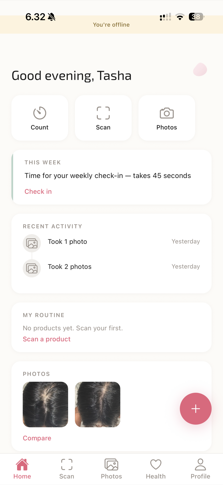
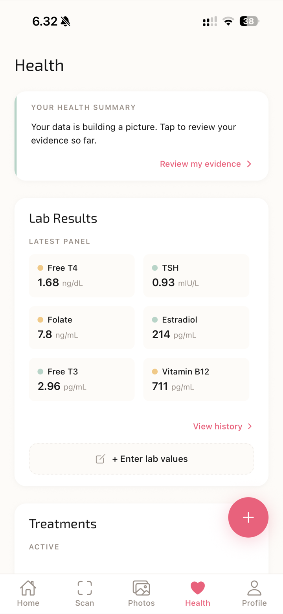
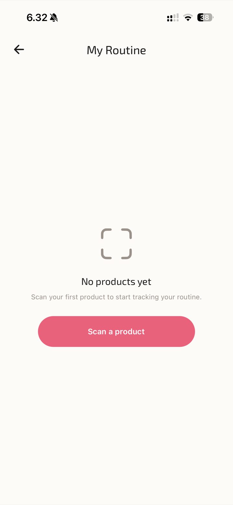

Case 01 · Health · Privacy-first AI
Turning the panic of sudden hair loss into a calm, structured, doctor-ready record, with an AI that helps you read the data but never sees your photos.



Real screens · built in React Native, running on device
People doing all the right things about their hair loss still can't tell whether any of it is working.
Sudden, diffuse shedding is frightening in a specific way: it's visible, it's daily, and the cause is rarely obvious. The people I designed for had moved past "what's wrong with me" into "I'm doing something about it": they were on finasteride, minoxidil or supplements, they'd had blood work done, they had months of hair photos. And they were still flying blind.
The reason is that the evidence lives in disconnected places:
Nobody connects the dots. The dermatologist sees labs; the patient sees hair; no one is cross-referencing a ferritin trend against a treatment start date against photo progression against a symptom pattern. A dermatologist does exactly this in their head during a 15-minute appointment, but only with the fraction of the data the patient can remember on the spot.
Discovery and a strategy session narrowed a broad "hair app" down to one sharp user and one breaking moment: a woman noticing sudden shedding and feeling the floor drop out. Two personas drove the design: one who wants depth, one who needs speed. Designing for both at once forced better solutions than either alone.
Already on medication, has blood work, takes photos. She wants to see whether her protocol is working and to walk into her next appointment with evidence, not vague recollection.
Will only keep using the app if every action is scan-and-done. Logging a symptom or a lab has to take seconds, or it won't happen at all.
That tension (depth for Nadia, speed for Priya) became a design constraint I held throughout: rich intelligence underneath, but never more than a tap or two to feed it.
The whole product depends on an AI that can reason over someone's blood work, medications and symptoms. That is also exactly the data you must never be careless with. So the privacy boundary wasn't a setting bolted on at the end. It was the first architectural decision, and it shaped the UX.
And the language is bounded at the prompt level. The readout never says "you have iron deficiency." It says "this is a pattern worth discussing with your doctor," with the specific question to ask. In health, the calm, non-diagnostic framing is the design: get it wrong and you've either frightened someone or implied a diagnosis you have no right to give.
The value is never in one stream of data. It's in the connections between them.
Five streams feed the readout: blood work, treatments, products, symptoms and photos. Any one of them is a snapshot; the insight lives in the correlation. The engine is a reasoning layer with embedded hair-science knowledge, not a chatbot.
A lab flags "ferritin 15: normal." For hair, 15 is well below optimal. That single distinction is most of the product's value: surfacing the values that are technically fine but suboptimal for hair, with the reason why.
| Biomarker | Lab "normal" | Optimal for hair | Why it matters |
|---|---|---|---|
| Ferritin | 12–150 ng/mL | > 70 ng/mL | Most common nutritional cause of shedding in women. |
| Vitamin D | 30–100 ng/mL | 40–60 ng/mL | Tied to the follicle growth cycle. |
| TSH | 0.4–4.0 mIU/L | 1.0–2.5 mIU/L | A "normal" 3.8 can still drive diffuse loss. |
Treatments are time-aware, so the readout can tell encouraging signal from expected side-effect:
The output is shaped, not dumped: lead with what's working, flag concerns with evidence rather than fear, name the gaps, and hand over specific questions for the next appointment.
This audience is already anxious. A red "ABNORMAL" banner on a lab value is technically accurate and emotionally destructive. So the entire status system is built to inform without frightening: same information, calmer register.
| Value | Label | Tone |
|---|---|---|
| In healthy range | In range | Neutral. No commentary needed. |
| Low side of normal | On the low side | "Within range but on the lower end, worth keeping an eye on." |
| Below range | Below range | "Below the typical range, worth discussing with your doctor." |
Never: "Danger," "Critical," "Abnormal," red fills, exclamation marks. Always: "worth discussing," "worth monitoring," "your doctor can help interpret this." The AI's whole personality is a knowledgeable, calm, evidence-based companion: it celebrates progress, reassures with evidence, and never uses fear to drive action.
The exportable report isn't a data dump. It's a structured clinical summary: what the patient reports, the lab trends, the treatments and durations, the response, and the questions to discuss. It saves the dermatologist fifteen minutes and gives them something they almost never get: months of continuous, organised data.
The free product is four evidence pillars, each kept ruthlessly fast for Priya: a 60-second shed count with baseline and trend, guided standardized photos with a ghost-overlay for alignment, a 2–4 month trigger timeline, and manual lab entry, all exportable as the doctor-ready PDF. The AI readout is the paid layer.
What I deliberately left out says as much as what I built:
Would put health images in front of a third-party model. Cut to v1.1 to keep them on-device.
That's a pill-reminder app. ruwth is an evidence log: the value is the record, not the nag.
Medical liability. "Discuss with your doctor" is the honest, safe boundary.
The paid readout bills through Stripe on the web, respecting Apple's anti-steering rules.
Built end-to-end and running on a physical device. The four evidence pillars, the doctor PDF export, and the privacy-bounded AI readout (JWT-auth edge function, per-readout consent gate, usage rate-limit, and a structured schema that forces calm, non-diagnostic, baseline-only output) are all coded and committed, with zero npm vulnerabilities and a written privacy contract. It is not on TestFlight or the App Store yet, and it has no paying users. The remaining work is the live model key, the Stripe checkout deploy, and store submission.
I'm stating that plainly because the discipline of this project (privacy-first AI over sensitive health data, anxiety-aware clinical UX, non-diagnostic language) only counts if the claims around it are honest too. The product is real and demonstrable. It hasn't met its first user yet.